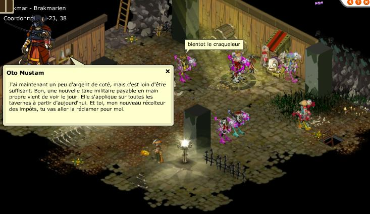
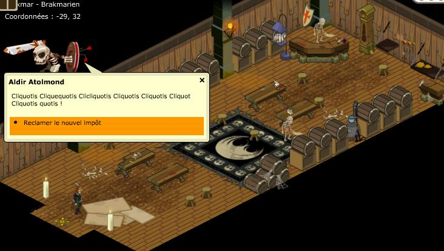
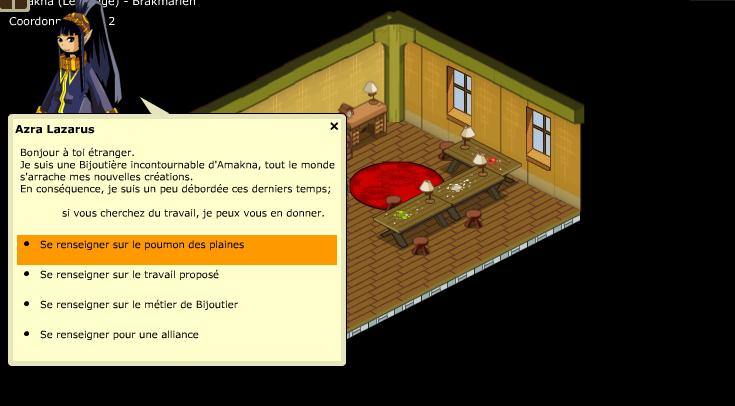
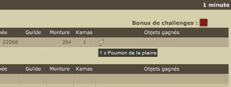

Revenir à la liste des Quêtes
Quêtes Brakmariennes (21 à 30)
Alignement +21
Vous pouvez choisir un ordre (mais aussi le faire plus tard si vous preferez, rendez vous à la tour des Ordres à Brakmar, plusieurs choix s'offrent à vous :
L'Ordre de l'Oeil Putride, disciple de Brumaire
Ce sont les Espions. Vous pouvez joindre cet Ordre en allant parler à Ledrob Terceséc au sous-sol de la Tour de Brâkmar. Pour être accepté, il faut lui ramener un oeil de corbac.
Cet Ordre permet d'utiliser des potions d'Objouflage (transformation de votre perso en divers objets de décor, assez sympa pour le côté RP ou même le fun)
L'Ordre du Coeur Saignant, disciple de Djaul
Ce sont les Guerriers. Vous pouvez joindre cet Ordre en allant parler à Kaffra Kyper au 1er étage de la Tour de Brâkmar. Pour être accepté, il faut lui ramener un os de chafer.
Cet ordre permet de faire perdre plus d’énergie aux ennemis vaincus (+ 200 points) et d'utiliser des potions d’agression de niveau 1 soit 1 case d’agression automatique (ordre plutôt reservé à ceux qui font du PvP régulièrement et souhaitent affaiblir leurs adversaires)
L'ordre de l'Esprit Malsain, disciple d'Hecate
Ce sont les Prêtres. Vous pouvez joindre cet Ordre en allant parler à Divad Dleifrepok au 2ème étage de la Tour de Brâkmar. Pour être accepté, il faut lui ramner un poil de barbe de Bwork Mage.
Cet ordre permet d'utiliser des potions de résurrection (l'odre des mules par excellence pour ressuciter un de vos autres perso, mais au sein d'une guilde cela peut etre la personne qui va allez aider les autres)
Alignement +22

 |
Il faut faire le tour de toutes les tavernes de Brakmar pour recolter le nouvel immpot. 2 fois il faudra vous battre mais vos adversaires ont 150 PV, rien de difficile.
|
Alignement +23


 |
Il faut récuperer une amulette auprés de la bijoutière en 0/2. Il faut la battre ainsi que son garde, elle a 40 PV mais son garde tape fort au cac et à 1000 PV, faites attention. A noter que de 23h à minuit son garde est de repos et qu'elle est donc seule.
|
Revenir à la liste des Quêtes
Dofus est un MMORPG édité par Ankama." Barbok " est un site non-officiel sans aucun lien avec Ankama.
Toutes les illustrations sont la propriété d'Ankama Studio et de Dofus. Le contenu de ce site a été rédigé initialement par Immortal, il ne s'agit que d'une remise en ligne effectuée par Eternal Games.